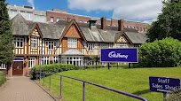
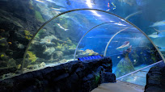

Venture into the history and art of birmngham and explore the museum
Take a tour around the factory that makes england's favourite chocolate bar
Explore the gardens featuring tropical and Mediterranean glasshouses
Enter the underwater wonderland with over 60 displays
